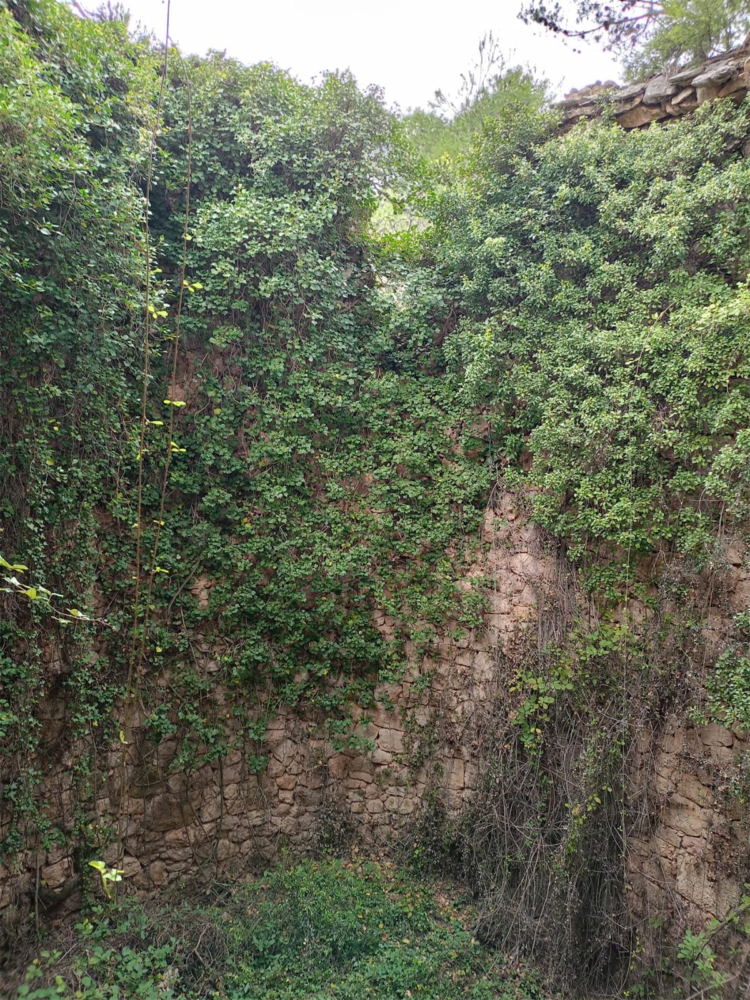

Gestión de cuadrillas forestales con aplicaciones móviles: optimización
Descubre cómo las aplicaciones móviles están revolucionando la gestión de cuadrillas forestales: digitalización, optimización de tareas, trazabilidad ...
Casos prácticos de IA y automatización para cualquier empresa, y a fondo para el sector medioambiental.
Descubre cómo las aplicaciones móviles están revolucionando la gestión de cuadrillas forestales: digitalización, optimización de tareas, trazabilidad ...

Descubre cómo digitalizar la gestión de viveros en Valencia para optimizar inventarios, trazabilidad, producción y cumplimiento fitosanitario. Aumenta...

Descubre cómo la automatización y las tecnologías digitales, como IoT, drones e IA, están revolucionando la prevención de incendios forestales para em...

Descubre cómo optimizar el control de stock en viveros con herramientas digitales. Reduce pérdidas, mejora la planificación y aumenta la rentabilidad ...

Descubre cómo la IA transforma la gestión de centros de jardinería en España. Optimiza inventarios, reduce desperdicios y mejora la atención al client...

Descubre qué es Astra AI, por qué está en tendencia y cómo puede inspirar al sector forestal español en gestión, automatización y sostenibilidad.

Descubre cómo la tecnología, desde IA hasta sensores IoT, puede revolucionar la prevención de incendios forestales con estrategias sostenibles y perso...

Descubre cómo la gestión forestal sostenible con IA está revolucionando la conservación de bosques, anticipando riesgos y mejorando la sostenibilidad.

Descubre cómo la industria de la inteligencia artificial en China está transformando sectores globales y las oportunidades que esto ofrece al sector f...

Descubre cómo los agentes de inteligencia artificial están transformando la gestión forestal con automatización, análisis avanzado y soluciones innova...

Descubre cómo los drones forestales en España están transformando la prevención, gestión de incendios y restauración del medio ambiente con tecnología...

Descubre cómo los drones forestales están transformando la gestión y conservación de los bosques en España. Innovación, eficiencia y sostenibilidad en...

Descubre cómo Genesis Inteligencia Artificial está revolucionando la tecnología forestal con soluciones innovadoras basadas en IA para un futuro más s...

"Descubre cómo la Inteligencia Artificial está revolucionando la gestión forestal sostenible con aplicaciones innovadoras para monitoreo, predicción y...

Descubre qué es el riesgo existencial de la inteligencia artificial, su impacto en el sector forestal y cómo gestionar sus beneficios y desafíos.

Descubre cómo el Congreso de Inteligencia Artificial en Granada impulsa la gestión sostenible del sector forestal. Tendencias, avances y más en 2026.
Descubre las mejores apps de inteligencia artificial gratis para optimizar la gestión forestal en España. Mejora tus operaciones con herramientas inno...

Descubre cómo los drones forestales en España están revolucionando la gestión ambiental: prevención de incendios, reforestación, IA y más. tendances.

Descubre cómo el Plan IA360 impulsa la inteligencia artificial en España y sus aplicaciones innovadoras en el sector forestal para una gestión más sos...

Descubre cómo los drones forestales en España están transformando la gestión de los bosques con tecnología avanzada, IA y soluciones innovadoras para ...
Explora los escenarios económicos de Anthropic sobre la inteligencia artificial para 2030 y su impacto en el sector forestal español. ¿Está tu negocio...

Descubre las críticas de Michael Burry sobre el crecimiento de la inteligencia artificial y su impacto en el sector forestal español. Análisis y refle...

Descubre la advertencia del congresista Chip Roy sobre los riesgos de la inteligencia artificial y qué significa para el sector forestal español y la ...
Muy pronto, nuevos artículos en esta sección.
Te lo decimos en una llamada gratuita y sin compromiso.
Reserva tu llamada gratuita →